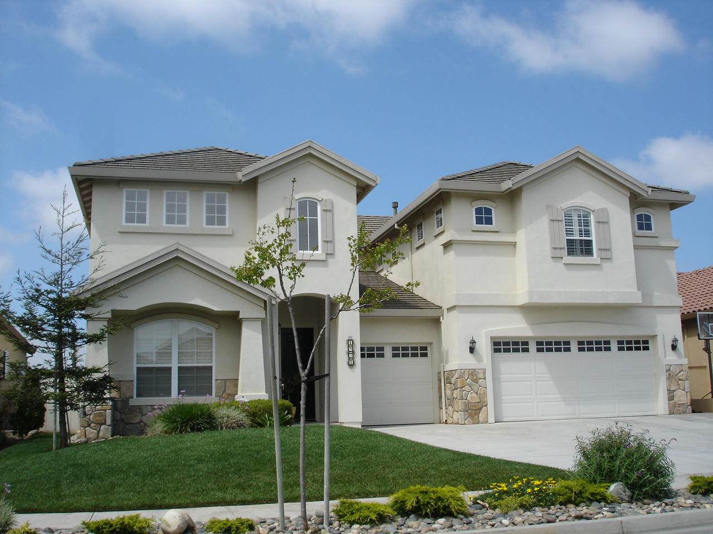

Как в США покупают жильё и работает ипотека (mortgage): основы для иммигрантов
В США основной способ купить жильё — ипотечный кредит (mortgage). Ниже по официальным источникам — CFPB, FHA/HUD, Fannie Mae — объясняется, как работает ипотека, первоначальный взнос и страховка PMI, роль кредитного рейтинга, кредиты FHA, расходы на оформление и возможности для иммигрантов (держателей грин-карты и рабочих виз). Это справка, а не финансовый совет.

Для многих семей собственное жильё — крупнейшее финансовое решение, и обычно его покупают через ипотечный кредит (mortgage). Ниже по официальным и широко признанным источникам изложено, что такое ипотека, какой нужен первоначальный взнос, какова роль кредитного рейтинга, что такое кредиты FHA, какие есть дополнительные расходы и возможности для иммигрантов. Это общая информация, а не финансовая или юридическая консультация.
Что такое ипотека
Ипотека — это кредит банка или иного кредитора на покупку жилья, который выплачивается многие годы вместе с процентами. До полного погашения жильё служит залогом по кредиту. Есть два основных типа: с фиксированной ставкой (fixed-rate) — ставка устанавливается в начале и не меняется весь срок; и с плавающей ставкой (adjustable-rate, ARM) — ставка обычно сначала ниже, затем может расти или снижаться через заданные интервалы по рыночному индексу, поэтому ежемесячный платёж тоже может меняться.
Срок кредита: 15 или 30 лет
Самые распространённые сроки ипотеки с фиксированной ставкой в США — 30 и 15 лет. У 15-летнего кредита выше ежемесячный платёж, но ниже общая переплата по процентам, и он гасится быстрее. У 30-летнего — ниже ежемесячный платёж, но выше общая сумма процентов за годы.
Первоначальный взнос и страховка PMI
Первоначальный взнос (down payment) — доля цены, которую покупатель вносит из своих средств. По данным CFPB, обычно нужен взнос не менее 3 процентов от цены жилья, но больше всего экономит тот, кто вносит не менее 20 процентов. Если по обычному (conventional) кредиту внесено меньше 20 процентов, как правило, требуется частная ипотечная страховка — PMI. По Закону о защите домовладельцев 1998 года (Homeowners Protection Act) PMI автоматически прекращается, когда остаток достигает 78 процентов первоначальной стоимости жилья, а на уровне 80 процентов покупатель может попросить отменить её.
Кредиты FHA
Кредиты, застрахованные Федеральной жилищной администрацией (FHA, входит в HUD), рассчитаны на покупателей с меньшим взносом или более низким кредитным рейтингом, включая многих покупателей первого жилья. По правилам FHA при кредитном рейтинге 580 и выше нужен взнос не менее 3,5 процента; при 500–579 — не менее 10 процентов. Ниже 500 кредит обычно недоступен. Отдельные кредиторы устанавливают требования выше минимума FHA.
Роль кредитного рейтинга
Кредитный рейтинг — показатель от 300 до 850 в системах FICO и VantageScore. Для обычной ипотеки обычно нужен рейтинг FICO около 620 и выше. Кредиторы также учитывают доход, занятость, соотношение долга к доходу и первоначальный взнос. Более высокий рейтинг обычно открывает доступ к более низкой ставке.
Соотношение долга к доходу (DTI)
Соотношение долга к доходу (DTI) — это ежемесячные выплаты по долгам, делённые на валовой ежемесячный доход, ключевой показатель для кредиторов. Как отмечает CFPB, у разных кредитных продуктов и кредиторов разные пределы DTI. Показатель около 43 процентов часто приводят как распространённый ориентир (для некоторых программ он может быть выше); это общий ориентир, а не жёсткий юридический предел.
Предварительное одобрение: pre-approval и pre-qualification
Перед поиском жилья большинство покупателей получают оценку у кредитора. Как поясняет CFPB, эти термины кредиторы используют по-разному: prequalification обычно основана на непроверенных данных, которые сообщает сам покупатель, а preapproval — на проверенных данных. Оба указывают возможную сумму кредита, но ни одно не является гарантированным предложением кредита.
Расходы на оформление и эскроу
Помимо первоначального взноса покупатель оплачивает расходы на оформление (closing costs) — по данным CFPB, обычно 2–5 процентов от цены жилья: оценка, осмотр, регистрация и т. п. По многим ипотекам открывают счёт эскроу (escrow): часть ежемесячного платежа накапливается и идёт на оплату налога на недвижимость и страхования жилья. По кредитам FHA и USDA эскроу, как правило, обязателен.
Возможности для иммигрантов
Постоянные жители (держатели грин-карты) могут получить обычную ипотеку на тех же условиях, что и граждане. Временные жители с действующей рабочей визой (например, H-1B, L-1) и надлежащими документами о статусе также имеют право на кредит. По правилам Fannie Mae для обычного кредита обычно требуется действительный номер социального страхования (SSN), и обычный кредит не выдаётся только по ITIN. Специальные ипотечные продукты для держателей ITIN (ITIN loans) существуют, но это отдельные, не массовые продукты от более узкого круга кредиторов.
Источники
- Consumer Financial Protection Bureau — Owning a Home (down payment, closing costs, prequalification vs preapproval, ARM)
- FHA.com (HUD-related) — FHA credit requirements and minimum down payment
- Fannie Mae — What to Know About Private Mortgage Insurance (PMI)
- Wikipedia — Homeowners Protection Act (PMI cancellation at 80%/78% LTV)